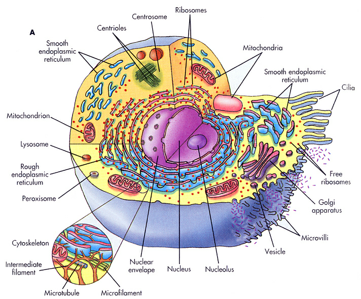

Cytologie Inleiding
Tegenwoordig lijkt het concept van de cel als de basis voor levende organismen zo vanzelfsprekend dat we ons maar moeilijk kunnen voorstellen dat dit niet altijd zo geweest is. De celtheorie die in 1838 en 1839 door Theodor Schwann (1810-1882) werd geformuleerd, houdt in dat alle levende organismen uit cellen zijn opgebouwd en dat nieuwe cellen slechts kunnen ontstaan uit reeds bestaande cellen. Hoewel nu niemand meer twijfelt aan deze theorie, werd het concept van “generatio spontanea” (= ontstaan van leven uit niet-levende voorgangers) lang aangehouden. In die periode was het vooropstellen van de ‘celtheorie’ als concept dan ook gedurfd en ver voor op de toenmalige tijdsgeest. In dit hoofdstuk worden de structuur van dierlijke cellen en de onderdelen ervan behandeld.
Hoewel celbiologen vaak generiek praten over ‘de cel’, zijn zeker niet alle cellen gelijk, om nog niet te spreken over de verschillen tussen prokaryote en eukaryote cellen of tussen dierlijke en plantencellen. Afhankelijk van de functie die een cel vervult, zal ze bepaalde verschillen in grootte, vorm, organellen en moleculaire noden vertonen.
Wat grootte-orde betreft is een bacterie, zoals bijvoorbeeld Lactobacillus, enkele micrometer in lengte, terwijl een kikkerei (ook 1 cel!) een diameter heeft van 1 millimeter. Sommige cellen, en eventueel enkele grotere celorganellen, kunnen dus met een lichtmicroscoop waargenomen worden. Kleinere celorganellen, zoals ribosomen, membranen en elementen van het cytoskelet vergen het gebruik van een elektronenmicroscoop (of het aanwenden van superresolutie-microscopie. Ook in vorm kunnen cellen erg van elkaar verschillen. Denk maar aan rode bloedcellen die doorheen haarvaatjes of capillairen moeten kunnen bewegen, of zenuwcellen die erg lange uitlopers hebben om informatie over lange afstanden te kunnen vervoeren.
Het overgrote deel van de lessen ‘celbiologie’ (= cytologie) en ‘weefselleer’ (= histologie) zullen toegespitst worden op de bespreking van eukaryotische cellen. Eukaryote cellen zijn gecompartimentaliseerd.
Hoewel celbiologen vaak generiek praten over ‘de cel’, zijn zeker niet alle cellen gelijk, om nog niet te spreken over de verschillen tussen prokaryote en eukaryote cellen of tussen dierlijke en plantencellen. Afhankelijk van de functie die een cel vervult, zal ze bepaalde verschillen in grootte, vorm, organellen en moleculaire noden vertonen.
Wat grootte-orde betreft is een bacterie, zoals bijvoorbeeld Lactobacillus, enkele micrometer in lengte, terwijl een kikkerei (ook 1 cel!) een diameter heeft van 1 millimeter. Sommige cellen, en eventueel enkele grotere celorganellen, kunnen dus met een lichtmicroscoop waargenomen worden. Kleinere celorganellen, zoals ribosomen, membranen en elementen van het cytoskelet vergen het gebruik van een elektronenmicroscoop (of het aanwenden van superresolutie-microscopie. Ook in vorm kunnen cellen erg van elkaar verschillen. Denk maar aan rode bloedcellen die doorheen haarvaatjes of capillairen moeten kunnen bewegen, of zenuwcellen die erg lange uitlopers hebben om informatie over lange afstanden te kunnen vervoeren.
Het overgrote deel van de lessen ‘celbiologie’ (= cytologie) en ‘weefselleer’ (= histologie) zullen toegespitst worden op de bespreking van eukaryotische cellen. Eukaryote cellen zijn gecompartimentaliseerd.

Schematische voorstelling van een ‘standaard’ dierlijke eukaryote cel, met aanduiding van de organellen en insluitsels.
Bij deze eukaryote cellen zit de genetische informatie (het DNA) opgeborgen in een celkern (nucleus) dewelke omgeven is door een kernmembraan. Bij celdeling wordt DNA verdubbeld (gedupliceerd) en doorgegeven aan dochtercellen. In elke cel is DNA opgebouwd uit lineaire sequenties nucleotiden. De ‘DNA-code’ wordt ‘overgeschreven’ (= transcriptie) naar een chemisch gerelateerde structuur, namelijk RNA, dat op zijn beurt ‘vertaald’ wordt (= translatie) in een ander type polymeer, namelijk eiwitten (meer info). De DNA-code bevat informatie voor zowel de lineaire sequenties als voor de 3D structuur van eiwitten. Macromoleculen worden gevormd uit subeenheden, meestal door zelfassemblage.
De cel is steeds omgeven door een celmembraan. Het cytoplasma (< Grieks cyto= cel, plasma= vervormbaar) is het deel van de cel buiten de kern, maar binnen de celmembraan (ook plasmamembraan genoemd). Het vloeibare gedeelte is het cytosol, dat ongeveer de helft van het celvolume in beslag neemt, maar geen microscopisch waarneembare structuur heeft. Deze half-vloeibare massa bevat duizenden enzymen en andere stoffen, die in actieve of niet-actieve vorm voorkomen. Activering en deactivering hangt vaak samen met fosforylering en defosforylering.
De structurele elementen van het cytoplasma zijn organellen, insluitsels en het cytoskelet.
Alle organellen bevatten specifieke enzymen en biochemische systemen die hun functie ondersteunen. Membraan-omgeven organellen vormen belangrijke compartimenten van de cel: mitochondriën die energie leveren; endoplasmatisch reticulum (ER), dat onder meer de eiwitsynthese verzorgt; het golgi-complex, dat een rol speelt bij de secretie en lysosomen die verantwoordelijk zijn voor de intracellulaire vertering. Aangezien membranen ontstaan uit vooraf bestaande membranen, zullen ook organellen, zoals mitochondriën of ER, uit reeds bestaande organellen ontstaan. Cellulaire bestanddelen worden naar hun juiste locatie binnen (of buiten) de cel geleid door middel van signaal-receptor interacties. Ze bewegen door diffusie, moleculaire pompen en motor-proteïnen.
Insluitsels zijn tijdelijke bestanddelen van het cytoplasma. Ze kunnen bestaan uit ophopingen van lipiden, koolhydraten (glycogeen) of pigmentkorrels.
Naast organellen en insluitsels is er nog het cytoskelet, dat onder andere bestaat uit centriolen, microfilamenten, intermediaire filamenten en microtubuli.
Receptoren en signaal-transductiemechanismen laten een cel toe zich aan te passen aan de omgeving. Moleculaire feedback-mechanismen controleren de moleculaire samenstelling, groei en differentiatie van een cel.
Cellen kunnen vervangen worden en zijn ook voortdurend bezig met de vervanging van hun organellen en opbouwende bestanddelen (lipiden, eiwitten, koolhydraten en combinaties van deze moleculen). Bij ééncelligen moeten alle functies door één cel worden uitgevoerd. Bij meercellige organismen kunnen de cellen zich door de expressie van verschillende delen van hun genoom differentiëren. In het menselijk lichaam, bijvoorbeeld, zijn op die manier al meer dan 200 verschillende celtypen geteld.
De cel is steeds omgeven door een celmembraan. Het cytoplasma (< Grieks cyto= cel, plasma= vervormbaar) is het deel van de cel buiten de kern, maar binnen de celmembraan (ook plasmamembraan genoemd). Het vloeibare gedeelte is het cytosol, dat ongeveer de helft van het celvolume in beslag neemt, maar geen microscopisch waarneembare structuur heeft. Deze half-vloeibare massa bevat duizenden enzymen en andere stoffen, die in actieve of niet-actieve vorm voorkomen. Activering en deactivering hangt vaak samen met fosforylering en defosforylering.
De structurele elementen van het cytoplasma zijn organellen, insluitsels en het cytoskelet.
Alle organellen bevatten specifieke enzymen en biochemische systemen die hun functie ondersteunen. Membraan-omgeven organellen vormen belangrijke compartimenten van de cel: mitochondriën die energie leveren; endoplasmatisch reticulum (ER), dat onder meer de eiwitsynthese verzorgt; het golgi-complex, dat een rol speelt bij de secretie en lysosomen die verantwoordelijk zijn voor de intracellulaire vertering. Aangezien membranen ontstaan uit vooraf bestaande membranen, zullen ook organellen, zoals mitochondriën of ER, uit reeds bestaande organellen ontstaan. Cellulaire bestanddelen worden naar hun juiste locatie binnen (of buiten) de cel geleid door middel van signaal-receptor interacties. Ze bewegen door diffusie, moleculaire pompen en motor-proteïnen.
Insluitsels zijn tijdelijke bestanddelen van het cytoplasma. Ze kunnen bestaan uit ophopingen van lipiden, koolhydraten (glycogeen) of pigmentkorrels.
Naast organellen en insluitsels is er nog het cytoskelet, dat onder andere bestaat uit centriolen, microfilamenten, intermediaire filamenten en microtubuli.
Receptoren en signaal-transductiemechanismen laten een cel toe zich aan te passen aan de omgeving. Moleculaire feedback-mechanismen controleren de moleculaire samenstelling, groei en differentiatie van een cel.
Cellen kunnen vervangen worden en zijn ook voortdurend bezig met de vervanging van hun organellen en opbouwende bestanddelen (lipiden, eiwitten, koolhydraten en combinaties van deze moleculen). Bij ééncelligen moeten alle functies door één cel worden uitgevoerd. Bij meercellige organismen kunnen de cellen zich door de expressie van verschillende delen van hun genoom differentiëren. In het menselijk lichaam, bijvoorbeeld, zijn op die manier al meer dan 200 verschillende celtypen geteld.